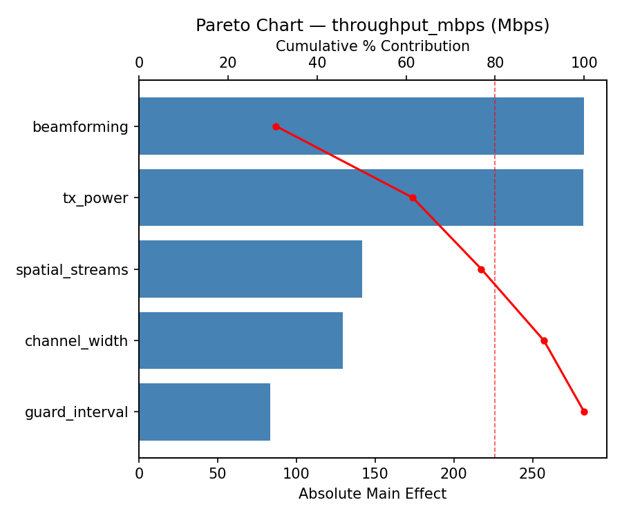
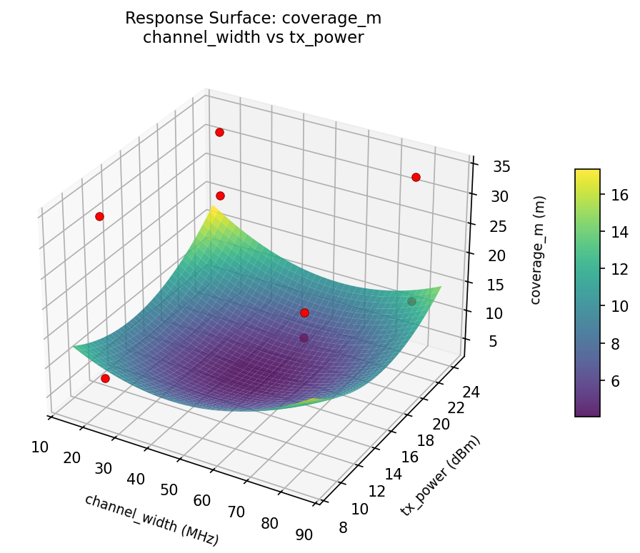
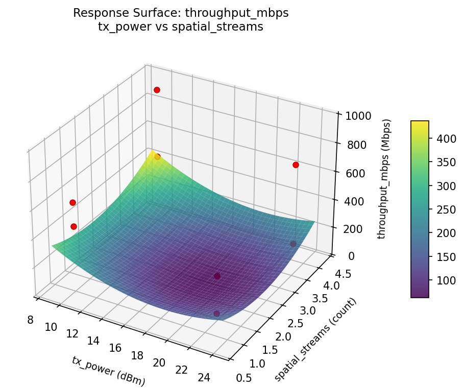

Summary
This experiment investigates wifi channel & power. Fractional factorial of 5 WiFi AP parameters for throughput and coverage.
The design varies 5 factors: channel width (MHz), ranging from 20 to 80, tx power (dBm), ranging from 10 to 23, guard interval, ranging from short to long, beamforming, ranging from off to on, and spatial streams (count), ranging from 1 to 4. The goal is to optimize 2 responses: throughput mbps (Mbps) (maximize) and coverage m (m) (maximize). Fixed conditions held constant across all runs include standard = wifi6, band = 5GHz.
A fractional factorial design reduces the number of runs from 32 to 8 by deliberately confounding higher-order interactions. This is ideal for screening — identifying which of the 5 factors matter most before investing in a full study.
Key Findings
For throughput mbps, the most influential factors were spatial streams (57.6%), channel width (27.2%), tx power (9.3%). The best observed value was 949.0 (at channel width = 80, tx power = 23, guard interval = short).
For coverage m, the most influential factors were beamforming (44.0%), tx power (31.2%), channel width (16.8%). The best observed value was 34.0 (at channel width = 80, tx power = 23, guard interval = short).
Recommended Next Steps
- Follow up with a response surface design (CCD or Box-Behnken) on the top 3–4 factors to model curvature and find the true optimum.
- Consider whether any fixed factors should be varied in a future study.
- The screening results can guide factor reduction — drop factors contributing less than 5% and re-run with a smaller, more focused design.
Experimental Setup
Factors
| Factor | Low | High | Unit |
|---|
channel_width | 20 | 80 | MHz |
tx_power | 10 | 23 | dBm |
guard_interval | short | long | |
beamforming | off | on | |
spatial_streams | 1 | 4 | count |
Fixed: standard = wifi6, band = 5GHz
Responses
| Response | Direction | Unit |
|---|
throughput_mbps | ↑ maximize | Mbps |
coverage_m | ↑ maximize | m |
Configuration
{
"metadata": {
"name": "WiFi Channel & Power",
"description": "Fractional factorial of 5 WiFi AP parameters for throughput and coverage"
},
"factors": [
{
"name": "channel_width",
"levels": [
"20",
"80"
],
"type": "continuous",
"unit": "MHz"
},
{
"name": "tx_power",
"levels": [
"10",
"23"
],
"type": "continuous",
"unit": "dBm"
},
{
"name": "guard_interval",
"levels": [
"short",
"long"
],
"type": "categorical",
"unit": ""
},
{
"name": "beamforming",
"levels": [
"off",
"on"
],
"type": "categorical",
"unit": ""
},
{
"name": "spatial_streams",
"levels": [
"1",
"4"
],
"type": "continuous",
"unit": "count"
}
],
"fixed_factors": {
"standard": "wifi6",
"band": "5GHz"
},
"responses": [
{
"name": "throughput_mbps",
"optimize": "maximize",
"unit": "Mbps"
},
{
"name": "coverage_m",
"optimize": "maximize",
"unit": "m"
}
],
"settings": {
"operation": "fractional_factorial",
"test_script": "use_cases/56_wifi_channel_power/sim.sh"
}
}
Experimental Matrix
The Fractional Factorial Design produces 8 runs. Each row is one experiment with specific factor settings.
| Run | channel_width | tx_power | guard_interval | beamforming | spatial_streams |
|---|
| 1 | 20 | 23 | long | off | 1 |
| 2 | 80 | 10 | short | off | 1 |
| 3 | 80 | 23 | short | on | 1 |
| 4 | 80 | 23 | long | on | 4 |
| 5 | 20 | 23 | short | off | 4 |
| 6 | 80 | 10 | long | off | 4 |
| 7 | 20 | 10 | short | on | 4 |
| 8 | 20 | 10 | long | on | 1 |
Step-by-Step Workflow
1
Preview the design
$ python doe.py info --config use_cases/56_wifi_channel_power/config.json
2
Generate the runner script
$ python doe.py generate --config use_cases/56_wifi_channel_power/config.json \
--output use_cases/56_wifi_channel_power/results/run.sh --seed 42
3
Execute the experiments
$ bash use_cases/56_wifi_channel_power/results/run.sh
4
Analyze results
$ python doe.py analyze --config use_cases/56_wifi_channel_power/config.json
5
Get optimization recommendations
$ python doe.py optimize --config use_cases/56_wifi_channel_power/config.json
6
Generate the HTML report
$ python doe.py report --config use_cases/56_wifi_channel_power/config.json \
--output use_cases/56_wifi_channel_power/results/report.html
Features Exercised
| Feature | Value |
|---|
| Design type | fractional_factorial |
| Factor types | continuous (3), categorical (2) |
| Arg style | double-dash |
| Responses | 2 (throughput_mbps ↑, coverage_m ↑) |
| Total runs | 8 |
Analysis Results
Generated from actual experiment runs using the DOE Helper Tool.
Response: throughput_mbps
Top factors: spatial_streams (57.6%), channel_width (27.2%), tx_power (9.3%).
Pareto Chart

Main Effects Plot

Response: coverage_m
Top factors: beamforming (44.0%), tx_power (31.2%), channel_width (16.8%).
Pareto Chart

Main Effects Plot

Response Surface Plots
3D surfaces fitted with quadratic RSM. Red dots are observed data points.
coverage m channel width vs spatial streams

coverage m channel width vs tx power

coverage m tx power vs spatial streams

throughput mbps channel width vs spatial streams

throughput mbps channel width vs tx power

throughput mbps tx power vs spatial streams

Full Analysis Output
=== Main Effects: throughput_mbps ===
Factor Effect Std Error % Contribution
--------------------------------------------------------------
spatial_streams -282.2500 96.4469 57.6%
channel_width 133.2500 96.4469 27.2%
tx_power 45.7500 96.4469 9.3%
guard_interval 20.2500 96.4469 4.1%
beamforming -8.2500 96.4469 1.7%
=== Interaction Effects: throughput_mbps ===
Factor A Factor B Interaction % Contribution
------------------------------------------------------------------------
tx_power spatial_streams 366.2500 21.8%
guard_interval beamforming -366.2500 21.8%
channel_width guard_interval 282.2500 16.8%
tx_power guard_interval -162.2500 9.7%
beamforming spatial_streams 162.2500 9.7%
tx_power beamforming 133.2500 7.9%
guard_interval spatial_streams -133.2500 7.9%
channel_width beamforming 45.7500 2.7%
channel_width spatial_streams -20.2500 1.2%
channel_width tx_power -8.2500 0.5%
=== Summary Statistics: throughput_mbps ===
channel_width:
Level N Mean Std Min Max
------------------------------------------------------------
20 4 419.0000 194.2301 159.0000 625.0000
80 4 552.2500 352.2427 118.0000 949.0000
tx_power:
Level N Mean Std Min Max
------------------------------------------------------------
10 4 462.7500 397.4421 118.0000 949.0000
23 4 508.5000 119.5059 417.0000 684.0000
guard_interval:
Level N Mean Std Min Max
------------------------------------------------------------
long 4 475.5000 254.0531 118.0000 684.0000
short 4 495.7500 329.8802 159.0000 949.0000
beamforming:
Level N Mean Std Min Max
------------------------------------------------------------
off 4 489.7500 343.8114 118.0000 949.0000
on 4 481.5000 235.3416 159.0000 684.0000
spatial_streams:
Level N Mean Std Min Max
------------------------------------------------------------
1 4 626.7500 227.5615 458.0000 949.0000
4 4 344.5000 262.1889 118.0000 684.0000
=== Main Effects: coverage_m ===
Factor Effect Std Error % Contribution
--------------------------------------------------------------
beamforming -13.7500 3.5604 44.0%
tx_power -9.7500 3.5604 31.2%
channel_width -5.2500 3.5604 16.8%
spatial_streams 2.2500 3.5604 7.2%
guard_interval -0.2500 3.5604 0.8%
=== Interaction Effects: coverage_m ===
Factor A Factor B Interaction % Contribution
------------------------------------------------------------------------
channel_width tx_power -13.7500 26.2%
channel_width beamforming -9.7500 18.6%
tx_power spatial_streams 5.7500 11.0%
guard_interval beamforming -5.7500 11.0%
tx_power beamforming -5.2500 10.0%
guard_interval spatial_streams 5.2500 10.0%
channel_width guard_interval -2.2500 4.3%
tx_power guard_interval 2.2500 4.3%
beamforming spatial_streams -2.2500 4.3%
channel_width spatial_streams 0.2500 0.5%
=== Summary Statistics: coverage_m ===
channel_width:
Level N Mean Std Min Max
------------------------------------------------------------
20 4 27.0000 5.2915 22.0000 34.0000
80 4 21.7500 13.7931 7.0000 34.0000
tx_power:
Level N Mean Std Min Max
------------------------------------------------------------
10 4 29.2500 5.5000 22.0000 34.0000
23 4 19.5000 11.9583 7.0000 34.0000
guard_interval:
Level N Mean Std Min Max
------------------------------------------------------------
long 4 24.5000 8.5049 13.0000 33.0000
short 4 24.2500 12.8160 7.0000 34.0000
beamforming:
Level N Mean Std Min Max
------------------------------------------------------------
off 4 31.2500 4.8563 24.0000 34.0000
on 4 17.5000 9.3274 7.0000 28.0000
spatial_streams:
Level N Mean Std Min Max
------------------------------------------------------------
1 4 23.2500 11.5866 7.0000 34.0000
4 4 25.5000 9.9499 13.0000 34.0000
Optimization Recommendations
=== Optimization: throughput_mbps ===
Direction: maximize
Best observed run: #4
channel_width = 80
tx_power = 23
guard_interval = short
beamforming = on
spatial_streams = 1
Value: 949.0
RSM Model (linear, R² = 0.7506, Adj R² = 0.1270):
Coefficients:
intercept +485.6250
channel_width +56.3750
tx_power +14.3750
guard_interval +197.6250
beamforming -22.8750
spatial_streams -76.8750
Predicted optimum (from linear model):
channel_width = 80
tx_power = 10
guard_interval = short
beamforming = off
spatial_streams = 1
Predicted value: 825.0000
Model quality: Good fit — general trends are captured, some noise remains.
Factor importance:
1. guard_interval (effect: 395.2, contribution: 53.7%)
2. spatial_streams (effect: -153.8, contribution: 20.9%)
3. channel_width (effect: 112.8, contribution: 15.3%)
4. beamforming (effect: -45.8, contribution: 6.2%)
5. tx_power (effect: 28.8, contribution: 3.9%)
=== Optimization: coverage_m ===
Direction: maximize
Best observed run: #4
channel_width = 80
tx_power = 23
guard_interval = short
beamforming = on
spatial_streams = 1
Value: 34.0
RSM Model (linear, R² = 0.7869, Adj R² = 0.2543):
Coefficients:
intercept +24.3750
channel_width +4.1250
tx_power +0.1250
guard_interval +0.3750
beamforming +4.8750
spatial_streams +5.3750
Predicted optimum (from linear model):
channel_width = 80
tx_power = 23
guard_interval = long
beamforming = on
spatial_streams = 4
Predicted value: 38.5000
Model quality: Good fit — general trends are captured, some noise remains.
Factor importance:
1. spatial_streams (effect: 10.8, contribution: 36.1%)
2. beamforming (effect: 9.8, contribution: 32.8%)
3. channel_width (effect: 8.2, contribution: 27.7%)
4. guard_interval (effect: 0.8, contribution: 2.5%)
5. tx_power (effect: 0.2, contribution: 0.8%)